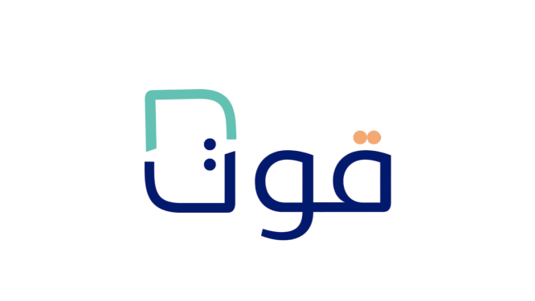
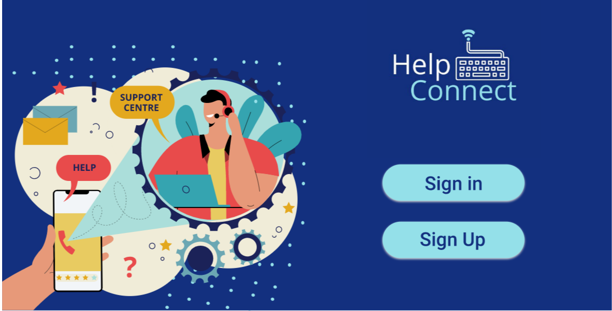

1 / 1
HELLO, I’M
Information Technology graduate specializing in Database Systems, with hands-on experience in enterprise application development, workflow automation, database management, and UI/UX design.
PR Workflow System
Timekeeper Portal
ABOUT ME
I'm an Information Technology graduate specializing in Database Systems, passionate about developing solutions that simplify processes and create better experiences for users.
During my internship at Saudi Ground Services (SGS), I worked on enterprise applications including PR Workflow, Timekeeper Portal, and FIS systems, contributing to workflow automation, system enhancements, and process improvements.
My interests combine software development, databases, workflow automation, and UI/UX design, allowing me to bridge technical implementation with business needs.
Professional Projects
GPA / 5.0
Building enterprise applications, designing database-driven solutions, automating workflows, and improving operational efficiency through technology.
Seeking opportunities in software development, enterprise systems, digital transformation, and business-focused technology solutions.
TECHNICAL SKILLS
C#, Java, Python, JavaScript, PHP
ASP.NET MVC, HTML, CSS, Bootstrap
SQL Server, MySQL, Database Design, Database Management
Azure DevOps, Git, SharePoint, Power Automate, Power BI, Visual Studio
Figma, Adobe XD, Wireframing, Prototyping, User Flows
EXPERIENCE
December 2025 – Present · Expected Completion: June 2026
June 2024 – July 2024 · Jeddah, Saudi Arabia
FEATURED PROJECTS
Transformed a manual email-based procurement process into a centralized enterprise workflow system with automated approvals, request tracking, role-based actions, dashboard monitoring, and external processing integration.
Transformed a manual Excel-based attendance process into a digital workflow with automated file generation, email integration, attendance validation, and automation bot processing.
Enhanced the Flight Information System (FIS) by improving user interfaces, optimizing screen layouts, and delivering a more intuitive and user-friendly experience for operational users.
Designed a Figma prototype and workflow plan to visualize how manual airline operational forms could be transformed into a future digital process.
ACADEMIC PROJECTS

AI-powered smart fridge system that combines IoT, computer vision, cloud services, and a mobile application to manage food inventory, track expiration dates, and reduce food waste.
Tourism & Booking Platform
Tourism and booking platform for browsing destinations, reserving hotels, booking attractions, and managing reservations.

Customer support platform prototype that enables businesses to communicate with customers through support tickets and live chat, supported by user research, UI/UX design, and usability testing.
LET’S CONNECT
I’m open to opportunities in software development, enterprise systems, workflow automation, UI/UX, and digital transformation projects.